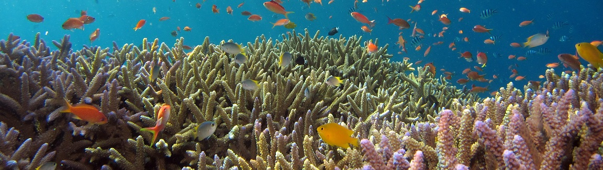

Chasing Coral
Climate change and the most colourful parts of our oceans
By Riel St. Amand
Perhaps the most famous term when talking about the risk of climate change to coral reefs is coral bleaching. However, what is coral bleaching? Corals actually live in a symbiotic relationship with a microscopic organism that provides them much of their energy, colour, and nutrients. When the oceans get too warm, the corals can get figuratively "stressed out", causing them to expel those microscopic organisms. That causes them to lose their colour, creating the famous photos of white corals that can be found in National Geographic and other similar magazines. While corals can recover from this process if conditions return to a closer level to normal, many corals often permanently die.
Bleaching is not the only effect that climate change is having on coral reefs. The stress from that increased sea temperature can also make corals more vulnerable to infectious disease outbreaks. Meanwhile, rises in sea level also cause a corresponding rise in sea floor sediment levels. In shallow reefs this can cause corals to be smothered or even buried by sediments. Furthermore, climate change is leading to an increase in storms like hurricanes. These increased storms can simply destroy corals.
Another commonly talked about term is ocean acidification. This process is a direct result of the increased carbon dioxide in the atmosphere dissolving into the ocean, creating carbonic acid. What does this change in pH (acid levels) do to the corals? Unfortunately, this change leads to both decreased growth rates and a decrease in structural integrity for the corals.
So what does climate change mean for coral reefs? Unfortunately, nothing good. Both increased bleaching events and increased disease outbreaks are already being seen. Increased numbers of extreme storms will cause more physical destruction of corals. Rising sea levels mean many shallow corals could be smothered or buried by rising sediment, and changes in ocean pH mean slower growing corals that are structurally weaker.
Source: NOAA. How does climate change affect coral reefs? National Ocean Service website, https://oceanservice.noaa.gov/facts/coralreef-climate.html 11/05/20.